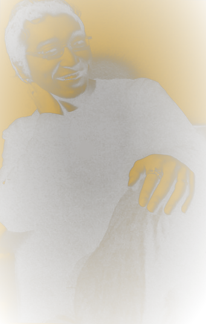

Your text is first turned into Japanese kana, kanji are read phonetically
using a built-in dictionary, and each kana is mapped to its glyph in the
Hunter × Hunter syllabary. Because the chart covers all 71 base sounds
(the full gojūon plus the voiced ゛ and semi-voiced ゜ marks),
any Japanese word or phrase can be written in the HxH language.
Contracted sounds like きゃ or しょ are written with their full kana (き+や, し+よ),
and a long vowel (ー) uses the HxH language's own lengthening symbol, so no sound is ever dropped.
入力文字はかなに変換され、各かながHxH言語の文字に対応します。全71音をカバーしており、拗音（きゃ・しょ等）は大きなかなで、長音（ー）は専用の長音記号で表すため、音が欠けることはありません。

入力
Ready · 準備完了
Supported: kanji, hiragana, katakana & mixed text · 漢字・かな・混合テキスト対応 Note: numbers, romaji and punctuation are skipped · 数字・ローマ字・記号はスキップ
出力
Script output
Enter text above to reveal the script 上記に文字を入力してください